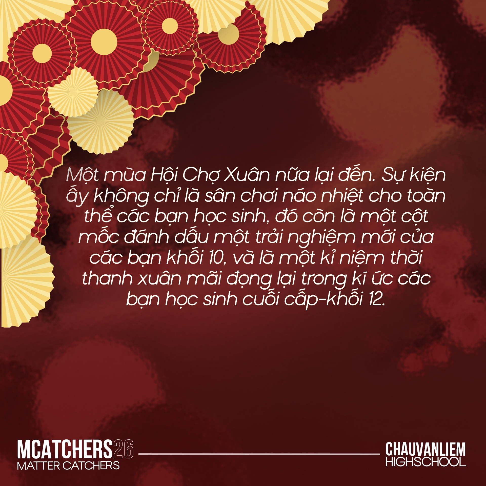
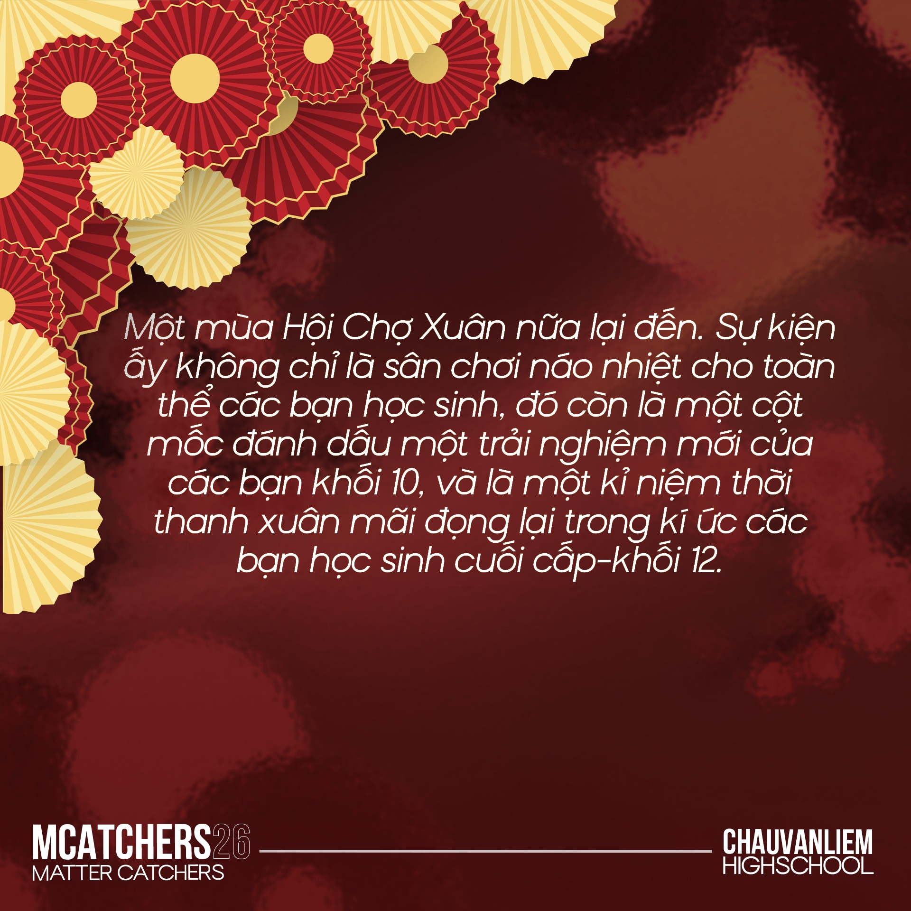

Một mùa Hội Chợ Xuân nữa lại đến. Sự kiện ấy không chỉ là sân chơi náo nhiệt cho toàn thể các bạn học sinh, đó còn là một cột mốc đánh dấu một trải nghiệm mới của các bạn khối 10, và là một kỉ niệm thời thanh xuân mãi đọng lại trong kí ức các bạn học sinh cuối cấp khối 12.
HỘI CHỢ XUÂN BÍNH NGỌ TRƯỜNG THPT CHÂU VĂN LIÊM
Matter Catchers - Truyền Thông Châu Văn Liêm

|
Để cùng nhau chào đón năm mới trong không khí rộn ràng và ấm áp, Trường THPT Châu Văn Liêm chính thức tổ chức HỘI CHỢ XUÂN với rất nhiều gian hàng xinh xắn, hoạt động thú vị và những khoảnh khắc đậm chất Tết đang chờ các bạn khám phá. |
|
Thời gian - địa điểm : 17h45 ngày 11/2/2026, tại sân trường THPT Châu Văn Liêm Đây không chỉ là dịp để vui chơi, mà còn là cơ hội để các bạn học sinh gặp gỡ, giao lưu và lưu lại thật nhiều kỷ niệm đẹp cùng thầy cô và bạn bè trong những ngày đầu xuân. |
 

|
NỘI DUNG CHƯƠNG TRÌNH
Matter Catchers - Truyền Thông Châu Văn LiêmKhông khí Tết đã rộn ràng khắp nơi! Hội chợ Xuân Bính Ngọ sắp sửa diễn ra với nhiều hoạt động vui nhộn, hấp dẫn, hứa hẹn mang đến một buổi tối ngập tràn niềm vui và may mắn đầu năm.
Thời gian hoạt động: 11/02/2026
- 17h30 - 17h45:
- Văn nghệ mở màn, trao quà “Cây Mùa Xuân” và khai mạc Hội chợ Xuân.
- 17h45:
- Mở cổng đón khách vào tham quan, trải nghiệm Hội chợ.
- 17h45 - 21h45:
-
Dạo quanh các gian hàng ẩm thực - trò chơi, thưởng thức giao lưu văn nghệ, rút thăm may mắn, hái lộc đầu xuân và xem pháo hoa chào mừng.
- 18h15-18h30: Múa lân
- 18h30-19h45: Giao lưu văn nghệ
- 19h45-21h00: Thi diện hóa trang-Rút thăm may mắn
- 21h00-21h15: Trao giải hội thi nhảy & rap chào Xuân 2026
- 21h15-21h45: Văn nghệ mừng Xuân
- 21h45 - 22h00:
- Pháo hoa chào năm mới - Bế mạc Hội chợ Xuân 2026
MENU HỘI CHỢ XUÂN - HƯƠNG VỊ NGÀY TẾT
Matter Catchers - Truyền Thông Châu Văn LiêmKhông khí Tết đã rộn ràng khắp nơi! Hội chợ Xuân Bính Ngọ sắp sửa diễn ra với nhiều hoạt động vui nhộn, hấp dẫn, hứa hẹn mang đến một buổi tối ngập tràn niềm vui và may mắn đầu năm.
Thời gian hoạt động: 11/02/2026
- 17h30 - 17h45:
- Văn nghệ mở màn, trao quà “Cây Mùa Xuân” và khai mạc Hội chợ Xuân.
- 17h45:
- Mở cổng đón khách vào tham quan, trải nghiệm Hội chợ.
- 17h45 - 21h45:
-
Dạo quanh các gian hàng ẩm thực - trò chơi, thưởng thức giao lưu văn nghệ, rút thăm may mắn, hái lộc đầu xuân và xem pháo hoa chào mừng.
- 18h15-18h30: Múa lân
- 18h30-19h45: Giao lưu văn nghệ
- 19h45-21h00: Thi diện hóa trang-Rút thăm may mắn
- 21h00-21h15: Trao giải hội thi nhảy & rap chào Xuân 2026
- 21h15-21h45: Văn nghệ mừng Xuân
- 21h45 - 22h00:
- Pháo hoa chào năm mới - Bế mạc Hội chợ Xuân 2026